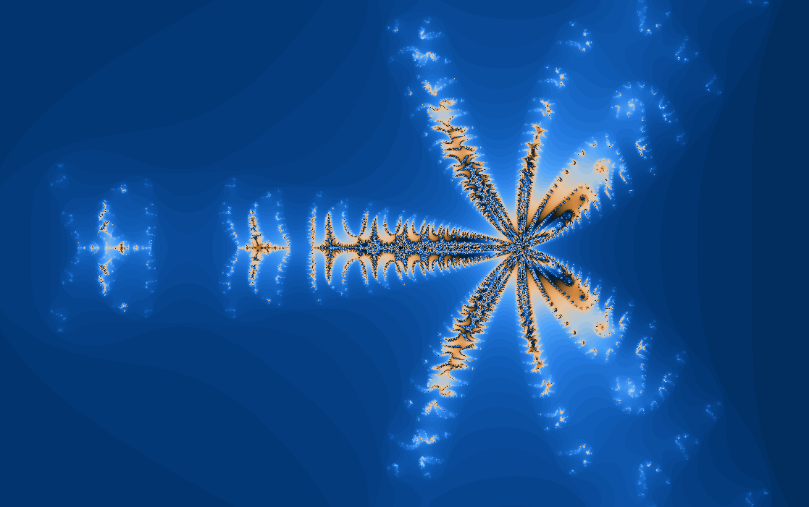
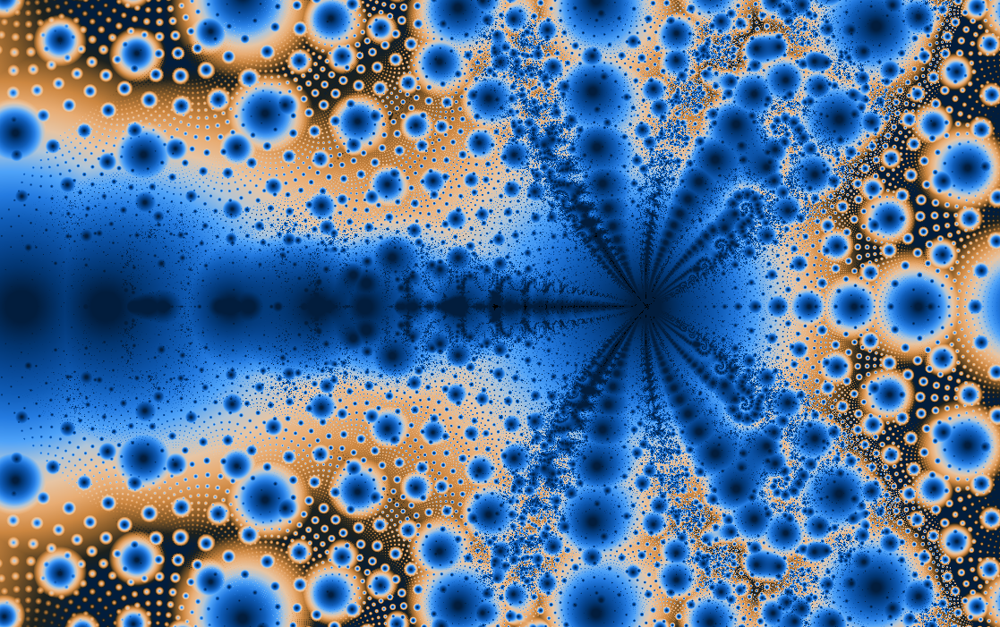
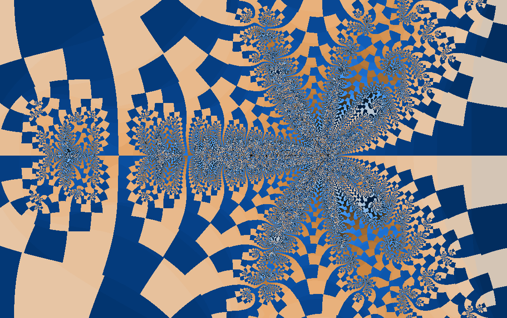
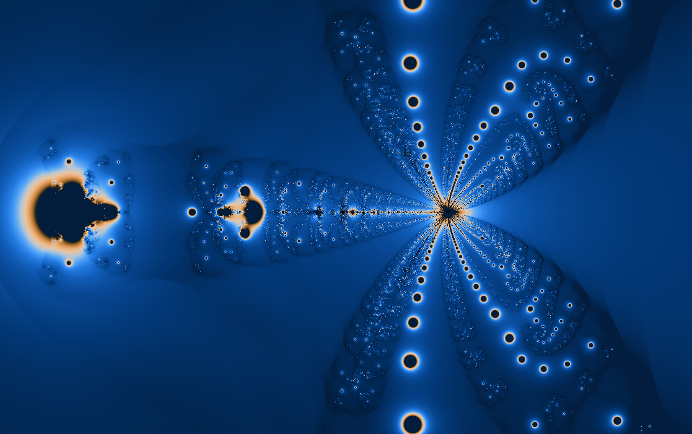
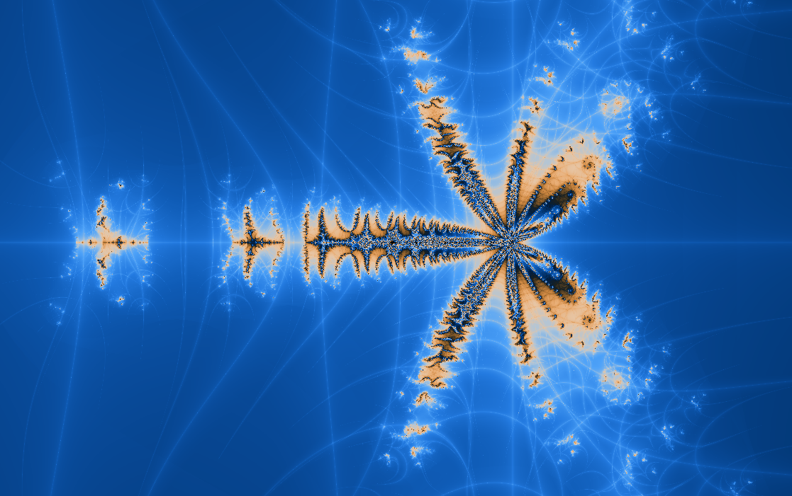

Memory maps
Manowar
A quadratic fractal that remembers where it just was.
\(z_{n+1}=z_n^2+m_n+c\)
Most beginner fractals update only from the current value. Manowar adds a second voice: the previous value returns in the next step, creating a map with inertia.
This fractal was created by Scott Taylor and Lee Skinner for FractInt.
What to try first
Start near the default view and look for places where the exterior seems pulled backward, as if each orbit leaves a wake.
Turn on orbit display. The path is especially helpful here because the formula keeps track of the previous step.
Toggle Julia mode and move the parameter slightly. The memory term makes small changes feel surprisingly dramatic.
Mathematical notes
The extra state variable
wxChaos uses a recurrence of the form \(z_{n+1}=z_n^2+m_n+c\), where \(m_n\) stores the previous value of \(z\). After each update, the old \(z_n\) becomes the next memory value. This makes the system second-order: to know what happens next, you need the present and the immediate past.
Coloring lenses
The set stays the same, but each rendering method asks a different question about the orbit.


Gaussian integer
Measures how closely escaping orbits pass near the complex integer lattice.
Apply in wxChaos

Triangle inequality
Turns relationships inside the orbit into layered, topographic texture.
Apply in wxChaos
Orbit traps
Colors points by how closely their orbits pass near the real and imaginary axes.
Apply in wxChaos